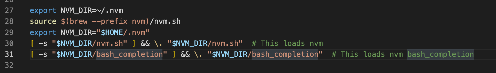

shortcut to run node in vs code is
^ + alt + n
The node installation is covered in Unit 3 - Enviroment Setup click the following link to go to the gihub setup page, it will go directly to the nodeJS section nodeJS
Below is a summarized version of the gihub setup page
Install the open sourced software Node Version Manager
nvm
nvm github page
At the bottom of the gihub page there is a read me with instructions on installing. Enter the following in the terminal
curl -o- https://raw.githubusercontent.com/nvm-sh/nvm/v0.37.2/install.sh | bash
(Put in zsh if using zsh)
If installing for the first time you should something like this
% Total % Received % Xferd Average Speed Time Time Time Current
Dload Upload Total Spent Left Speed
100 13527 100 13527 0 0 49731 0 --:--:-- --:--:-- --:--:-- 49915
=> Downloading nvm from git to '/home/your-user/.nvm'
=> Cloning into '/home/your-user/.nvm'...
remote: Enumerating objects: 333, done.
remote: Counting objects: 100% (333/333), done.
remote: Compressing objects: 100% (283/283), done.
remote: Total 333 (delta 38), reused 150 (delta 25), pack-reused 0
Receiving objects: 100% (333/333), 177.16 KiB | 1.46 MiB/s, done.
Resolving deltas: 100% (38/38), done.
=> Compressing and cleaning up git repository
=> Appending nvm source string to /home/your-user/.bashrc
=> Appending bash_completion source string to /home/your-user/.bashrc
=> Close and reopen your terminal to start using nvm or run the following to use it now:
export NVM_DIR="$HOME/.nvm"
[ -s "$NVM_DIR/nvm.sh" ] && \. "$NVM_DIR/nvm.sh" # This loads nvm
[ -s "$NVM_DIR/bash_completion" ] && \. "$NVM_DIR/bash_completion" # This loads nvm bash_completion
The lines to pay attention to are the last three. These are the shell commands necessary to initialize nvm. But we don't want to have to run these commands everytime we open a terminal, so we should put these into our shell startup file
The general rule on this is:
If your shell is zsh, use ~/.zshrc If your shell is bash, use ~/.bashrc
You'll notice, in the example above, the nvm installer automatically added the lines to the ~/.bashrc even though the example runs zsh. You need to verify that the lines were correctly added to your startup file. Don't trust the installer to always do the right thing in this case. Everyone's system is different.
To verify it, open up your startup file in vscode with the code command. Use the appropriate startup filename depending on which shell you have (~/.zshrc or ~/.bashrc).
Should I replace /bash_completion with zsh something???

The odd-numbered releases such as 15 are experimental releases
Install:
nvm install 16
You should see something like this
Downloading and installing node v16.14.0...
Downloading https://nodejs.org/dist/v16.14.0/node-v16.14.0-darwin-arm64.tar.xz...
######################################################################### 100.0%
Computing checksum with shasum -a 256
Checksums matched!
Now using node v16.14.0 (npm v8.3.1)
Creating default alias: default -> 16 (-> v16.14.0)
Once completed you should be able to type
node --version
If it prints out a path with .nvm in it, then you've done it correctly!
/home/<<your username>>/.nvm/versions/node/v16.14.0/bin/node